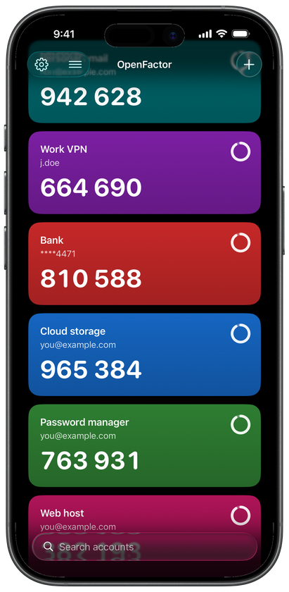
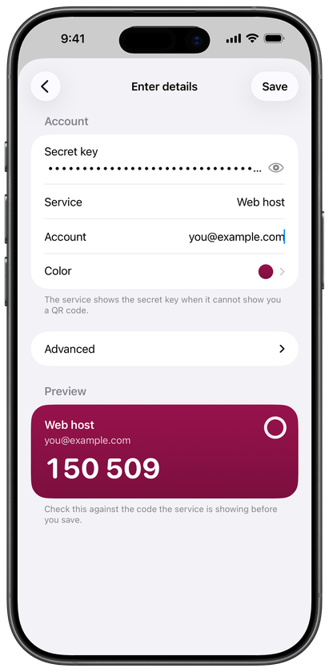

OpenFactor
Open source two factor codes. No account, no server, no tracking.
What it is
OpenFactor generates two factor authentication codes on iPhone and Apple Watch. Your accounts are encrypted before they are stored. If you turn on iCloud sync, encrypted records travel through iCloud Keychain while the key that decrypts them stays on your devices.
What it does
- Codes on your wrist Shows one code at a time on Apple Watch, and keeps working with your iPhone off, absent, or out of range.
- Bring your accounts with you Import Google Authenticator transfer codes and Aegis vaults, scan with the Camera app, or share an image straight into OpenFactor without saving it to Photos.
- Backups you can take elsewhere Export an encrypted backup in a public, documented format, or a plain file for moving to another authenticator. The difference is stated on screen.
- App Lock Optionally require Face ID, Touch ID, or your passcode before codes are shown.
What it deliberately does not do
- No Mac app and no browser extension A second factor is worth less the moment it lives on the machine asking for it.
- No passwords and no autofill This is an authenticator, not a password manager.
See it


The accounts shown are invented. Every code in a real install is generated on the device and never leaves it.
Built in the open
OpenFactor has been public from the first commit. The source, the security design, the test vectors, the review findings and the hardware experiments are all there to inspect. Read it on GitHub.